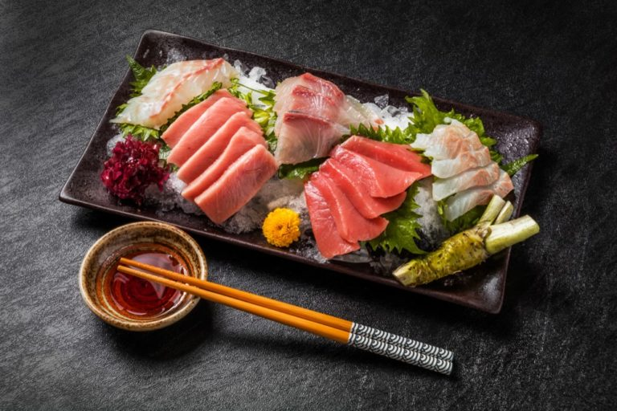

にぎり_Japanese Nigiri

味付けしたご飯を新鮮な刺身、調理済みのエビ、または玉子焼きで包み、伝統的な日本の握り寿司に。
Seasoned Rice is Wrapped with Fresh Raw Fish, Cooked Shrimp, or Egg Omelet for Traditional Japanese Nigiri Sushi.
材料_Ingredients
- 水 4カップ_4 Cups Water
- 生白米 2カップ_2 Cups Uncooked Rice
- 味付け米酢 ½カップ_1/2 Cup Seasoned Rice Vinegar
- 白砂糖小さじ1、または必要に応じて_1 Teaspoon White Sugar, or as Needed
- 1/4ポンドのハマチ（ブリ）_One Teaspoon Salt, or as Needed
- ¼ポンドマグロ（マグロ)_1/4 Pound Himachi(Yellow Tail)
- 1/4 ポンドの調理済みえび (エビ)、殻をむき、バターで揚げたもの_1/4 Pound Maguro(Tuna)
- 1/4 ポンドの調理済みえび (エビ)、殻をむき、バターで揚げたもの_1/4 Pound Cooked Ebi(Shrimp), Shelled and Butterflied
- 卵6個_6 Eggs
- 白砂糖 小さじ½_1/2 Teaspoon White Sugar
- 塩 小さじ⅛_1/8 Teaspoon Salt
- わさびペースト 小さじ1（お好みで）_1 Teaspoon Wasabi Paste(Optional)
- 海苔 1 枚、1 インチの短冊切りにする_1 Sheet Nori, Cut into 1 inch Strips
手順Step 1
ステップ1_Step 1
- 鍋に水とご飯を強火で沸騰させます_Bring water and rice to a boil in a saucepan over high heat.
- 火を弱めの中火にし、ふたをして、米が柔らかくなり、液体が吸収されるまで 20 ～ 25 分煮ます_Reduce heat to medium-low, cover, and simmer until the rice is tender and the liquid has been absorbed, 20 to 25 minutes.
- ご飯を茶碗に移し、しゃもじか木べらで米酢を切る_Transfer rice to a bowl and cut in rice vinegar using a rice paddle or wooden spoon.
- 小さじ1杯の砂糖と小さじ1杯の塩で味付けするか、味を調えます_Season with 1 teaspoon sugar and 1 teaspoon salt, or to taste.
- 約 30 分間、室温まで冷まします_Allow to cool to room temperature, about 30 minutes.
ステップ2Step 2
- 魚を包む準備をするために、繊維に沿って長さ約 2 インチ、幅 1 インチの薄片にスライスします_Prepare fish for wrapping by slicing against the grain into thin pieces about 2 inches long and 1 inch wide.
- 使用するまで冷蔵します_Refrigerate until ready to use.
ステップ 3_Step 3
- ボウルに卵、砂糖小さじ1/2、塩小さじ1/4を入れて泡立てます。_Whisk eggs, 1/2 teaspoon sugar, and 1/4 teaspoon salt together in a bowl.
- 混合物の約1/4を、油を塗った大きなフライパンに中火で薄く注ぎます。_Pour about 1/4 of the mixture in a thin layer in a large greased skillet over medium heat.
- 約2〜3分、完全に調理されるまでかき混ぜずに調理します。_Cook without stirring until cooked through, about 2 to 3 minutes.
- 丸太に丸めて、パンの片側に置きます。_Roll into a log and set in one side of the pan.
- 卵の混合物の 1/4 で繰り返し、各丸太を新しい丸太に転がして、1 つの大きな丸太を作成します。_Repeat with 1/4 of the egg mixture, rolling each log into a new log, to create one large log.
- オムレツを斜めにスライスし、厚さ約 1/2 インチにします。_Slice omelet on the diagonal into pieces about 1/2-inch thick.
ステップ 4_Step 4
- 魚やエビの切り身を手に取り、お好みでわさびペーストを軽く塗ります。_Place a piece of fish or shrimp in your hand and smear it lightly with wasabi paste if desired.
- ご飯大さじ1～2杯を握り、手で小さなナゲットに丸めます。_Grab 1 to 2 tablespoons of rice and roll it into a small nugget in your hand.
- おにぎりを魚や海老の上にのせ、軽くはさんで密着させます。_Place the rice ball on top of the fish or shrimp, squeezing gently to make it adhere.
- 残りの魚とエビを組み立てる間、取っておきます。_Set aside while you assemble the remaining pieces of fish and shrimp.
ステップ 5_Step 5
- 卵焼きのスライスを手に取り、大さじ1〜2杯のご飯をつかみ、手で小さなナゲットに転がします._Take a slice of egg omelet in your hand, grab 1 to 2 tablespoons of rice, and roll it into a small nugget in your hand.
- 卵の上におにぎりをのせ、軽くはさんでくっつける。_Place the rice ball on top of the egg, squeezing gently to make it adhere.
ステップ 6_Step 6
- 各パッケージに海苔を巻き付けます。海苔の片端を湿らせて、封をします。_Wrap a strip of nori around each package; moisten one end of the nori strip and seal to join.